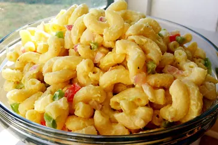

This macaroni salad always gets lots of compliments. It's an easy recipe to make and has a pleasing taste that everyone seems to love!
This is a classic, tasty, and oh-so easy macaroni salad recipe! Made with classic ingredient staples including celery, red pepper, and onion and dressed up in a simple creamy mayo-based dressing, this is guaranteed to be a hit at every cookout and potluck this year!